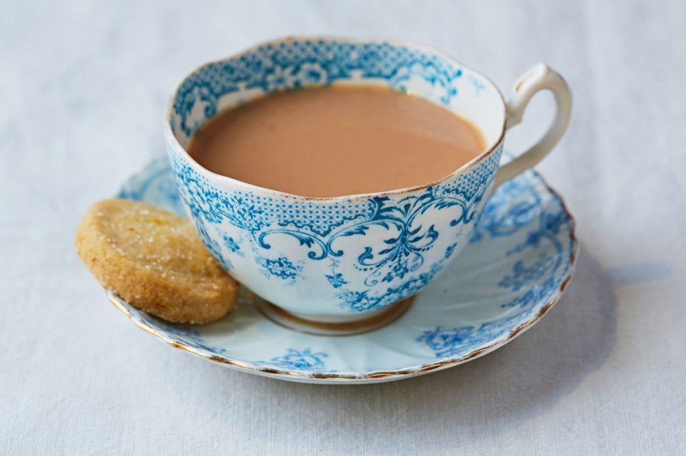

Tea Recipe

Brief Description
Everyone makes tea differently – but if you popped round to our place for a visit, this is how we’d make you a brew.
Ingredients
Steps
- Run the tap a little so the water’s nicely aerated, and only boil it once to keep the oxygen level up. Oxygen in water helps flavour!
- Pop a tea bag into your mug, pour over the hot water and stir briefly.
- Tea needs time to unlock all its flavour, so give it 4-5 minutes to do its thing. This is a perfect time to munch a sneaky biscuit or daydream about holidays.
- Before removing the tea bag, gently squidge it against the side of the mug. Just the once, mind – if you really mash it, it'll taste bitter.
- We like a splash of semi-skimmed or whole milk, but your brew is unique to you – so add milk, sugar, honey, lemon or nothing at all. Most importantly, enjoy!